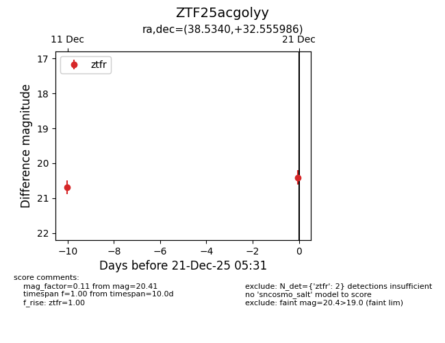
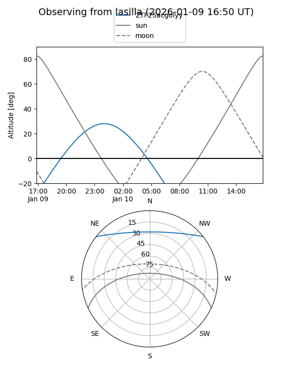
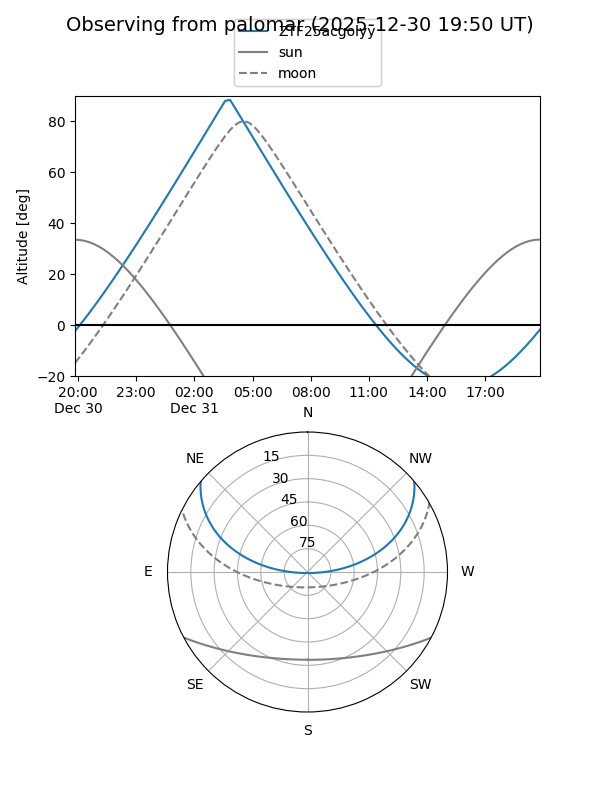

ZTF25acgolyy
Target ZTF25acgolyy at 2025-12-18 11:17
Aliases and brokers:
FINK: fink-portal.org/ZTF25acgolyy
Lasair: lasair-ztf.lsst.ac.uk/objects/ZTF25acgolyy
ALeRCE: alerce.online/object/ZTF25acgolyy
alt names
ZTF25acgolyy (ztf,fink_ztf)
Coordinates:
equatorial (ra, dec) = 38.5340,+32.55599
equatorial (HMS+DMS) = 02:34:08.15,+32:33:21.55
galactic (l, b) = (146.8000,-25.51223)
Photometry
last ztfr=20.69
1 ztfr detections
Lightcurve

Visibility


Additional plots